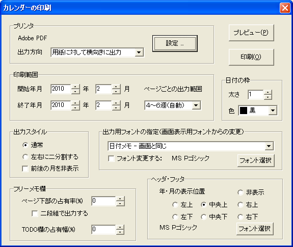
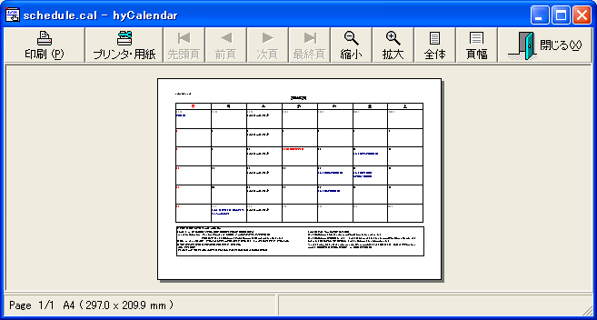

hyCalendar は，月単位でのカレンダー印刷機能を備えています．
メニュー [ファイル]-[印刷] を選択すると， 印刷ダイアログが表示されます．
印刷は月単位です．プリンタを選び，印刷する範囲を年月で指定すると， １ヶ月１ページ単位でカレンダーを印刷します． 標準では，プリンタで選択された用紙に対して通常は横向きに， カレンダーエリアと同等のものが印刷されます （印刷サイズの調整のため，期間予定の矢印の先端や，太い点線などの再現性は多少異なります）．
| 設定項目名 | 効果 |
|---|---|
| プリンタ | プリンタの選択を [設定] ボタンから行うことができます． また，カレンダーの [出力方向] は，通常「用紙に対して横向きに出力」しますが， 縦長のカレンダーを印刷したい場合には「プリンタの設定に合わせて出力」を選んでください． |
| 印刷範囲 | 印刷したい年月の範囲を指定してください． １ヶ月１ページでページ数が増えていくため，長期間の印刷には時間がかかります． 印刷する月の１日から月末までを１ページにちょうど含めるように各ページの行の高さを自動調整するか， １ページ６週で固定するかを選択することができます． |
| 日付の枠 | 日付やフリーメモ欄の枠を表示する線の太さ，色を設定することができます． プリンタによって出力に多少の差異があるため， 線が細い，色が薄いといった場合には，設定を変更してみてください． |
| 出力スタイル |
「左右に二分割」を選ぶと，用紙の左半分に１週間の前４日，右半分に後ろ３日を配置し， 中央部に空白を用意します．用紙を左右に切断する必要がある場合に使用してください． 「左右にに分割」を選ぶと，年月を表示するヘッダの位置が 「中央上」から自動で「左上」に変わります． 「前後の月を非表示」にチェックを付けると， 印刷対象の前月，翌月にあたる部分が空白になります． |
| 出力用フォントの指定 | 印刷時，標準では画面表示に使われているフォントを 使用しますが，ここで，フォント設定を 上書きすることができます． 変更したいフォントをコンボボックスの一覧から選び， 「フォント選択」ボタンからフォントを選択してください． また，「フォント変更する」のチェックを外すと， 一覧で現在選択中のフォント変更を取り消すことができます． |
| フリーメモ欄 | フリーメモ，TODO をカレンダーと一緒に印刷したい場合は， [ページ内での占有率] の値を0より大きい値に設定してください（最大50）． [二段組で表示する] にチェックを付けると， フリーメモが二段組で表示されるようになります． また，[TODO欄の占有幅] を0〜100の範囲で設定することで， フリーメモ欄の右側にTODOリストも同時に印刷することができます． 印刷されるTODOリストは，ウィンドウ上に表示されているものと同じで， TODO管理ダイアログの「表示済みTODOは隠す」設定の状態に従います． 未チェックのものには"□"が，チェック済みについては"■"が先頭に付加されます． TODOリストについては，段組設定はできません． 出力スタイルとして「左右に二分割」を選んでいる場合， TODOリストの占有幅は右半分より大きくなることはありません （占有幅 40以上で右半分を占有します）． |
| ヘッダ，フッタ | 何年何月のカレンダーなのかを，任意のフォントで， 上下，左右中央のいずれか６箇所に配置することができます． 非表示を選択すると，文字列の表示を省略します． |
印刷結果がどのようになるか知りたい場合， [プレビュー] ボタンを選択してプレビューダイアログを開いてください． 以下は，[ページ内での占有率] を20％に， [二段組で表示する] を選択した状態のプレビューです．
プレビュー画面では，[拡大][縮小][全体][頁幅]ボタンを 使って拡大率を変更することができます． また，複数の月を印刷しようとしている場合は， [先頭頁][前頁][次頁][最終頁]ボタンでページ移動を行うことができます． [プリンタ・用紙] ボタンでは，プリンタの設定を 変更することができます． プレビュー画面からも [印刷]ボタンを押して印刷を行うことができます． プレビューを終了する場合，前に戻って印刷範囲やフリーメモの 設定を変更したい場合は[閉じる]を選択します．